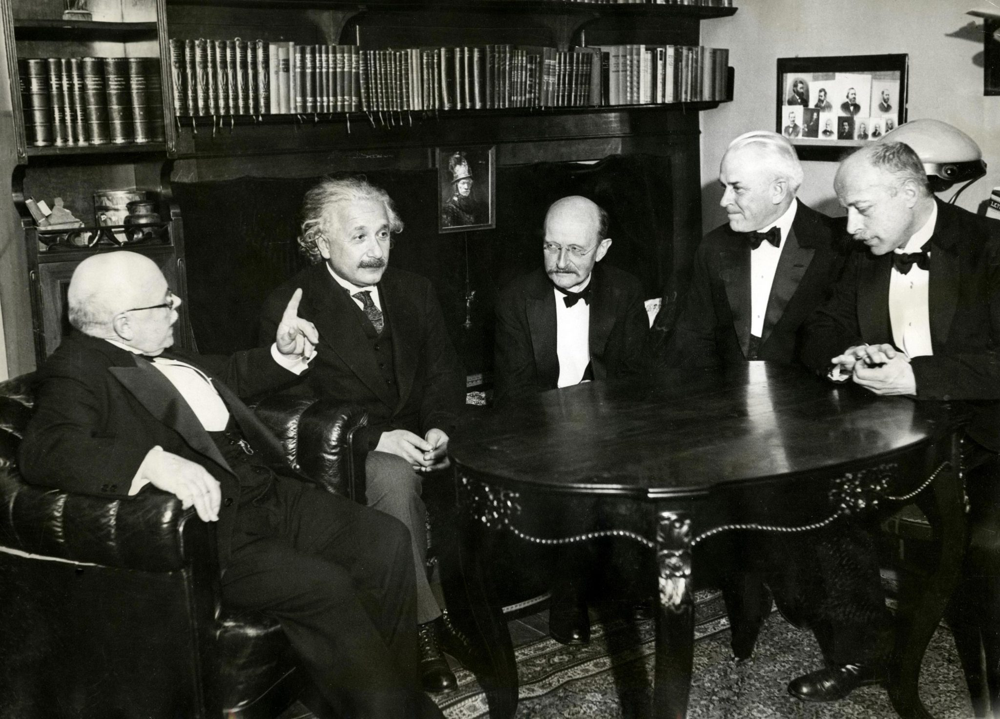
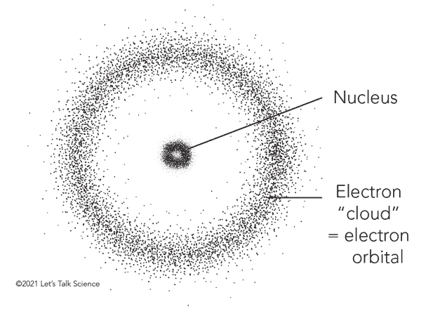
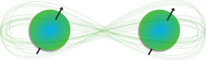
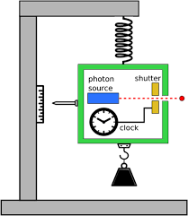
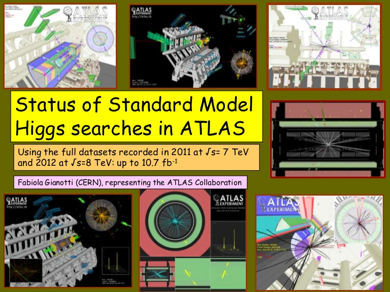

The Birth of Quantum Mechanics
The phrase "quantum mechanics" was coined (in German, Quantenmechanik) by the group of physicists including Max Born, Werner Heisenberg, and Wolfgang Pauli, at the University of Göttingen in the early 1920s, and was first used in Born's 1924 paper "Zur Quantenmechanik".

The Idea of Quantized Light
Max Plank spent one night pondering over his friend Hermann Reubens' new data showing a linear realm of the developing blackbody radiation curve. In a few hours, he had devised an equation modeling this curve that only made sense with a paradigm shift about the nature of electromagnetic radiation. Planck’s theory held that radiant energy is made up of particle-like components, known as “quanta.”
Max Plank is quoted as saying that his treatment of EM radiation as quantized was, "a purely formal assumption ... actually I did not think much about it." It wasn't until Einstein's work with the photoelectric effect that scientists began to understand how revolutionary this idea was.
Uncertainty and Causality:
In 1926, Max Born wrote,
One does not get an answer to the question, What is the state after collision? but only to the question, How probable is a given effect of the collision? From the standpoint of our quantum mechanics, there is no quantity which causally fixes the effect of a collision in an individual event.
Heisenberg wrote his first paper on quantum mechanics in 1925 and 2 years later stated his uncertainty principle which describes the related limits in certainty of a particle's position and momentum.

Nucleus and Electron "clouds" are a representation of quantum probability distributions.
Vedanta
Vedanta is one of the six classical schools of Indian philosophy, rooted in the ancient texts known as the Vedas. Vedanta explores the nature of reality, the self, and the ultimate purpose of existence. To boil down the wisdom of a spiritual book is an impossible task. Here is a very simplified version of some of the core ideas and how they connect to concepts of quantum mechanics.
Core Ideas of Vedanta
- Brahman: The ultimate reality. This reality is the source of existence (conciousness).
- Atman: The true self, which is considered identical to Brahman, implying that the ultimate reality is not separate from individual consciousness.
- Maya: The concept of illusion or ignorance that causes the perception of a fragmented, material world, obscuring the realization of the unity of Brahman and Atman.
- Liberation (Moksha): The realization of one's true nature and unity with Brahman, leading to freedom from the cycle of birth and rebirth (samsara).
Connection to Physics
- The notion of an underlying unity resonates with quantum mechanics—where particles exhibit entanglement and non-local correlations, hinting at a profound interconnectedness.
- The quantum observation effect parallels Vedanta's view that our perception shapes our experience of reality.
- The pursuit of a unified theory in physics, which aims to explain all fundamental forces and particles, reflects Vedanta’s idea of Brahman as the singular, unifying reality behind the apparent disconnection of the universe.

Einstein vs. Bohr:
The uncertainty principle was not accepted by everyone. Its most outspoken opponent was Einstein. He devised a challenge to Niels Bohr which he made at a conference which they both attended in 1930. Einstein suggested a box filled with radiation with a clock fitted in one side. The clock is designed to open a shutter and allow one photon to escape. Weigh the box again some time later and the photon energy and its time of escape can both be measured with arbitrary accuracy.
Niels Bohr is reported to have spent an unhappy evening, and Einstein a happy one, after this challenge by Einstein to the uncertainty principle. However Niels Bohr had the final triumph, for the next day he had the solution. The mass is measured by hanging a compensation weight under the box. This is turn imparts a momentum to the box and there is an error in measuring the position. Time, according to relativity, is not absolute and the error in the position of the box translates into an error in measuring the time.

A Comical Discovery
The presentation that announced the discovery of the Higgs Boson in 2012 used the Comic Sans font. Many scientists were amused, but some raised a fight on the social media site formerly known as Twitter. On April 1st 2014, CERN announced on its website:
From today, all of CERN’s official communication channels are switching to exclusive use of the font Comic Sans… According to our calculations, 80% of the success of the presentation came not from the discovery of a fundamental particle that explains the Brout-Englert-Higgs mechanism for how particles get mass, but from the choice of font.

Reflection Questions:
Your personal reflection is an important component of your personal trajectory as a scientist. You will be graded only on completion, but please take the time to sincerely reflect on the following questions. I will use the collective responses to help me design better materials in the future.
- How important is the presentation of scientific discoveries in shaping their impact and reception?
- How are philosophy and religious perspectives connected to a mathematical study of physics?
- How does quantum mechanics challenge our philosophical understanding of reality and measurement?
- How have the revolutionary ideas of quantum mechanics influenced other areas of science and technology beyond physics?
Sources:
- https://spark.iop.org/collections/stories-physics-quantum-nuclear-and-particle-physics
- https://www.history.com/this-day-in-history/the-birth-of-quantum-theory#
- https://scitechdaily.com/max-planck-and-the-birth-of-quantum-mechanics/
- https://mathshistory.st-andrews.ac.uk/HistTopics/The_Quantum_age_begins/
- https://www.theverge.com/2012/7/4/3136652/cern-scientists-comic-sans-higgs-boson
- https://www.vedantany.org/articles/blog-post-title-two-6txr3
- https://en.wikipedia.org/wiki/Vedanta